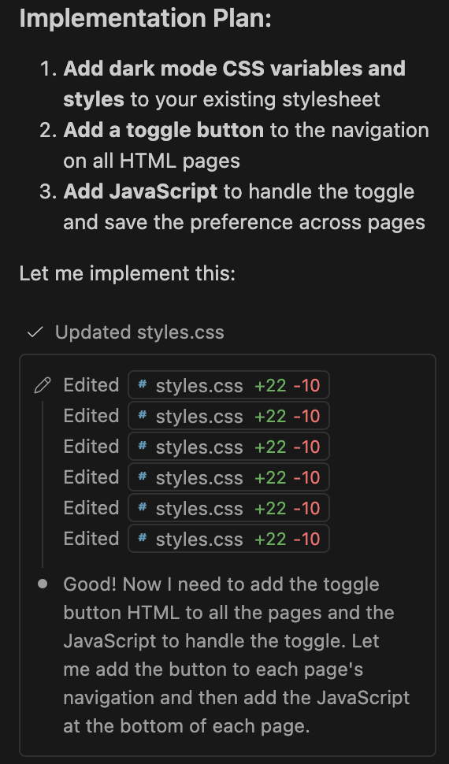
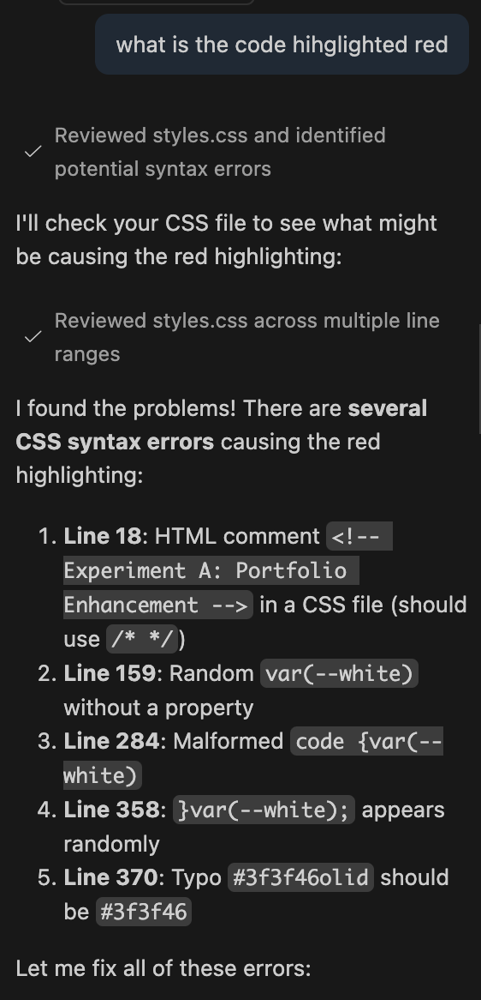
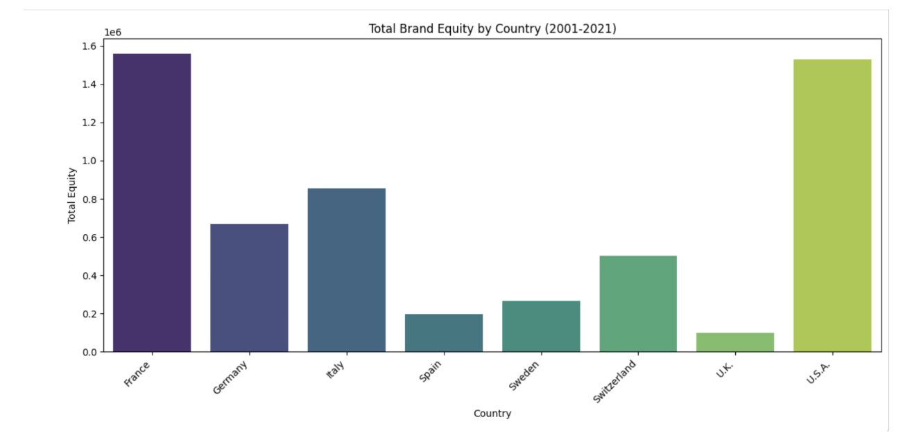

Experiment A: Portfolio Enhancement
In this experiment I used AI to create a dark mode button on all of the pages of my portfolio. I prompted AI with: “please make a Dark mode toggle on my portfolio that shows up on every page and effects every page. please dont change anything already done and explain what you do.” The AI created a new section in the CSS folder that applies new color variations for the background colors and text colors that apply when the user presses the button and made sure it remembered the users' preferences between pages. At first, there was a bug with the section boxes not turning darker, but it was easily fixed by applying a variation to each section. AI wrote all of this all, but I can understand the general function.


Experiment B: Python Code Generation
In this expiramnet, I used CoLab to read the same fashion equity CSV file used in the Tableau visualization and to create a basic chart. I prompted it with a very convoluted description and it sent this back to me: “Analyze the provided df DataFrame by calculating the total equity for each brand by summing values from 'Equity2001' to 'Equity2021', then aggregate this total equity by 'Country', visualize the results using a bar chart, and provide an interpretation of the correlation between total equity and brand origin countries from 2001 to 2021.” This was exactly what I was looking for and it was able to complete the task perfectly. The only issue what that the equity sums were all equal to zero. I realized I needed to fill in all empty values. This fixed the issue, and it was able to produce data for the sums per country and a chart. This was way more efficient and capable than Tableau.

Download Colab NotebookExperiment C: Debug with AI
I noticed that not all of the navigation buttons show up when you click into a specific lab. My solution was to copy and paste the list of tabs from the index navigation code onto each page. AI went a step beyond to make sure all tabs were available under the hamburger and also made sure the hamburger appeared on each page, which I hadn’t noticed it didn’t do last time. I understand what it did and could have done it myself, but it helped me catch something that wasn’t completed last time. Then I asked it, “Are there any bugs anywhere in my portfolio?” It only pointed out the two empty tabs/pages eventhough the cards on the home page weren’t linking to the lab pages. I don’t know how it missed these but that is why you have to work alongside AI. I copied the links from the navigation section and made it function myself.
Final Thoughts
AI was extremely helpful with accelerating the coding process as I would have struggled to learn and implement so much of what was done. I will definitely use AI in the future to help me generate code I couldn/t by myself. There were some moments where I was glad to know enough to realize the AI missed some issues or messed something up. This proved to me the importance of not allowing AI to be fully automated. Using AI helped me be successful with vibe coding but using my brain helped me get the outputs I wanted.